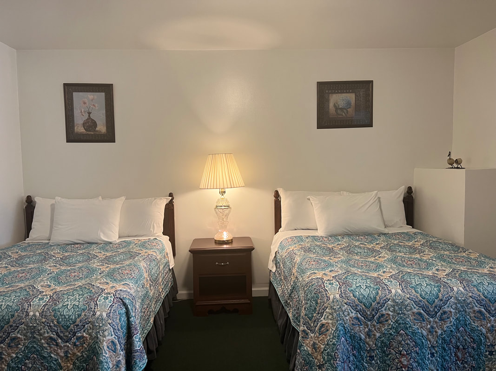
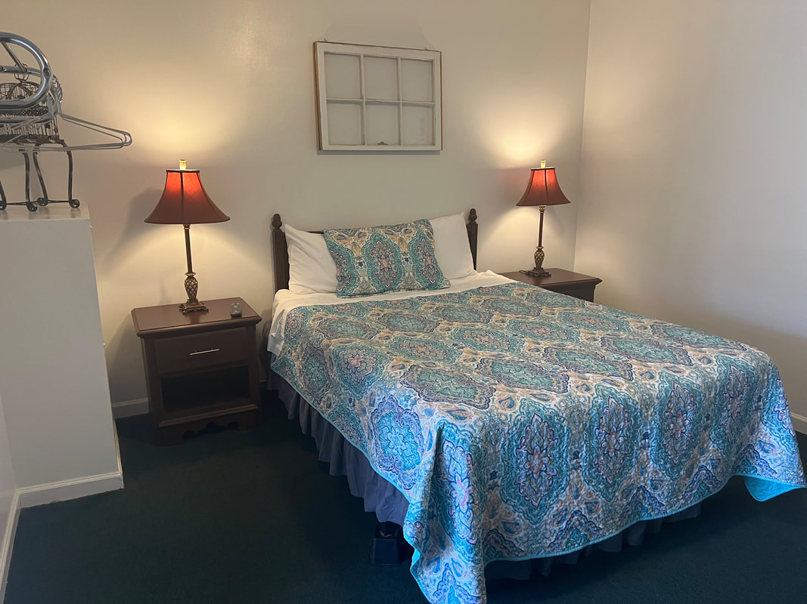
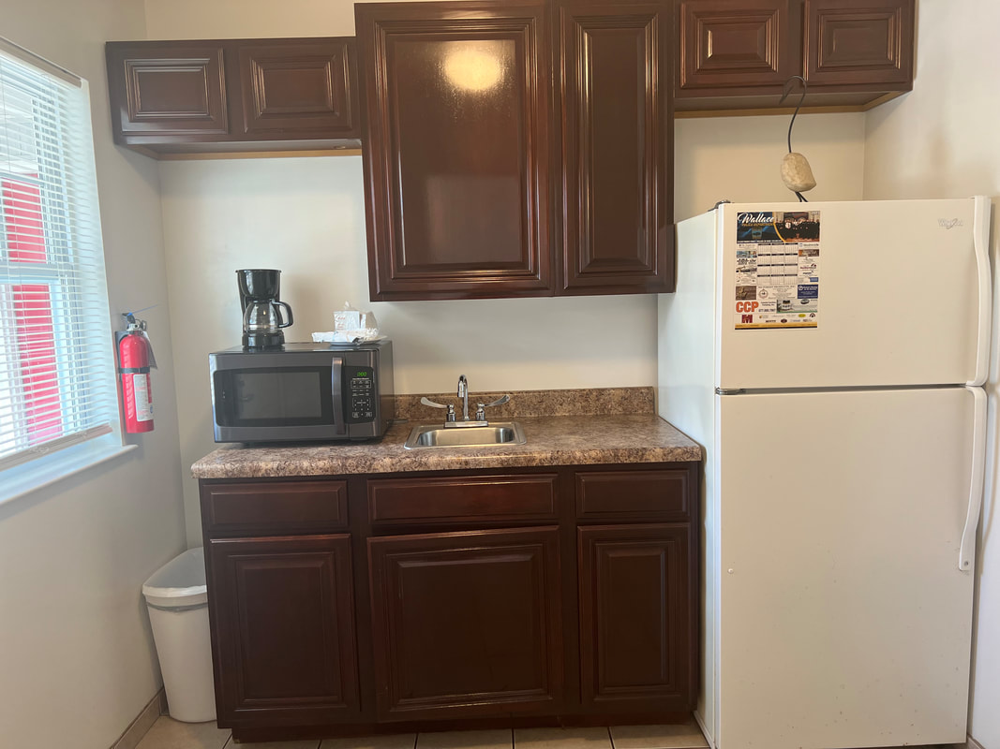
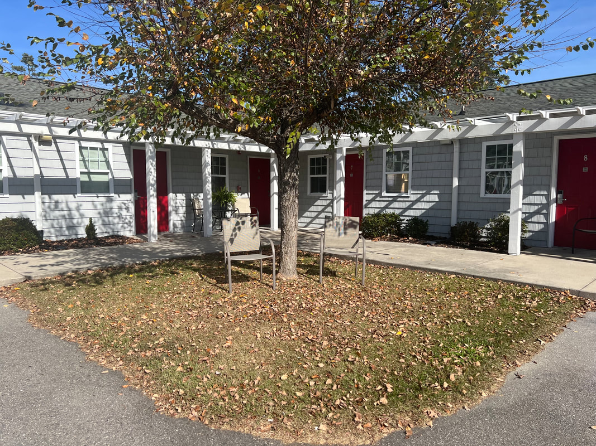
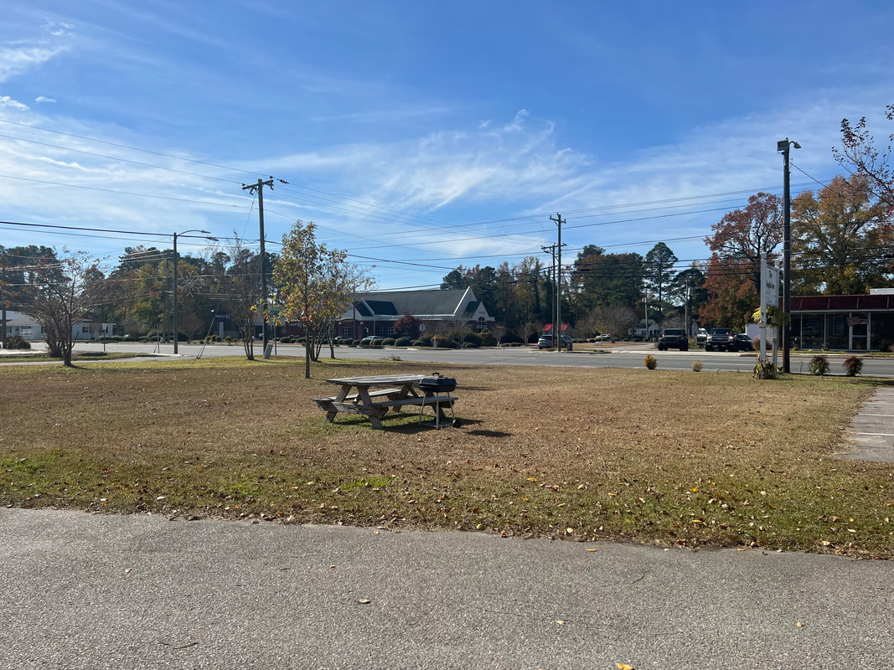
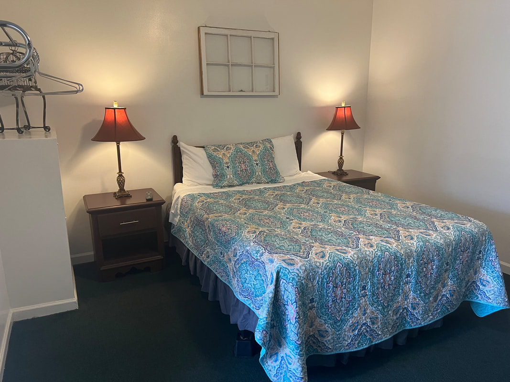

Standard Room
Comfortable accommodations with queen bed, kitchenette, and private bathroom. Clean, simple, and perfect for travelers.
- Queen bed
- Kitchenette
- Private bathroom
- Air conditioning
- Free WiFi

The Duplin Inn offers comfortable lodging in the heart of Wallace, North Carolina. Our inn features clean, well-appointed rooms with kitchenettes, making it ideal for extended stays or overnight stops while exploring the region.
Located on N Norwood Street, we provide a peaceful setting with convenient access to local restaurants, shops, and attractions throughout Duplin County.

Comfortable accommodations with queen bed, kitchenette, and private bathroom. Clean, simple, and perfect for travelers.

Extended-stay friendly room with full kitchenette including refrigerator, microwave, and cooking essentials.

Spacious corner unit with extra natural light and comfortable seating area. Ideal for longer stays.

The Duplin Inn provides the essentials for a comfortable stay in Wallace. Free WiFi throughout, free parking, and kitchenettes in most rooms make us a practical choice for travelers.
The Duplin Inn is located in Wallace, a small town in Duplin County, Eastern North Carolina. We're convenient to I-40 and within easy reach of Wilmington, Jacksonville, and the coast.
The Duplin Inn